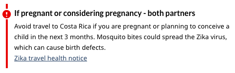

Alerts: Alpha design pattern
- Last updated: May 17, 2019
- Progress: Draft
- Design type: Pattern
Users' attention often needs to be brought to specific content that makes them aware of a result of a user action, a clarification or exception to surrounding content or to warn the user of a consequence of an action or inaction in their task.
On this page
Status
- Lead department
- Canada Revenue Agency
- Current stage
- Alpha - see the prototype: Costa Rica travel advisory
- Testing
- Explanation of the testing / blog article link
When to use
There are 4 variations of the alert pattern to be used in different circumstances:
Danger alert
Use the danger alert to draw attention to a situation that could place the user in danger, such as a do not travel warning, or to alert the user of a technical issue that could cause them to be unable to complete their task.
Warning alert
Use the warning alert to draw attention to a possible consequence of an action or inaction, such as legal penalty that could apply.
Info alert
Use the info alert to draw attention to a clarification, caveat or status of surrounding content.
Success alert
Use success alert to draw attention to a successful action, such as with form validation.
What to avoid
Do not use the alert pattern if the content does not need to stand out, such as in cases where a warning is neither high risk nor frequently experienced.
The alert pattern should not be used to create labels or pills. There are patterns for these within the design system:
How to implement
Danger alert
If pregnant or considering pregnancy - both partners
Avoid travel to Costa Rica if you are pregnant or planning to conceive a child in the next 3 months.
Code
<section class="alert alert-danger"> <h3>If pregnant or considering pregnancy - both partners</h3> <p>Avoid travel to Costa Rica if you are pregnant or planning to conceive a child in the next 3 months.</p> </section>
Warning alert
Changes to impaired driving and cannabis-related crime laws
New penalties for impaired driving and cannabis-related crimes may affect your immigration status in Canada. If you commit one of these crimes, you may not be able to come to or stay in Canada.
Code
<section class="alert alert-warning"> <h3>Changes to impaired driving and cannabis-related crime laws</h3> <p><a href="https://www.canada.ca/en/immigration-refugees-citizenship/news/notices/impaired-driving-cannabis-penalties-affect-immigration-status.html">New penalties for impaired driving and cannabis-related crimes may affect your immigration status in Canada</a>. If you commit one of these crimes, you may not be able to come to or stay in Canada.</p> </section>
Info alert
Current status of the call for applications: Closed
Thank you for your interest in Canada Summer Jobs. Applications are now closed.
Code
<section class="alert alert-info"> <h3>Current status of the call for applications: Closed</h3> <p>Thank you for your interest in Canada Summer Jobs. Applications are now closed.</p> </section>
Success alert
Your request for publicly available data from the list of charities has been successful
The turnaround time to process your request may take up to four (4) weeks. We will contact you if we need more information.
Code
<section class="alert alert-success"> <h3>Your request for publicly available data from the List of charities has been successful</h3> <p>The turnaround time to process your request may take up to four (4) weeks. We will contact you if we need more information.</p> </section>